测603069海汽集团在2021年1月份走势
公历起卦时间：2021年1月1日11时0分 (手工指定)
干支：庚子年 戊子月 己酉日 庚午时 （日空：寅卯）
神煞：驿马－亥 桃花－午 日禄－午 贵人－子，申
离宫：火风鼎 离宫：火风鼎
六神 伏神 本 卦 变 卦
勾陈 兄弟己巳火 ▅▅▅▅▅ 兄弟己巳火 ▅▅▅▅▅
朱雀 子孙己未土 ▅▅ ▅▅ 应 子孙己未土 ▅▅ ▅▅ 应
青龙 妻财己酉金 ▅▅▅▅▅ 妻财己酉金 ▅▅▅▅▅
玄武 妻财辛酉金 ▅▅▅▅▅ 妻财辛酉金 ▅▅▅▅▅
白虎 官鬼辛亥水 ▅▅▅▅▅ 世 官鬼辛亥水 ▅▅▅▅▅ 世
螣蛇 父母己卯木 子孙辛丑土 ▅▅ ▅▅ 子孙辛丑土 ▅▅ ▅▅
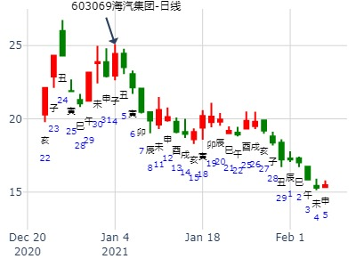
主帖标题: Q以岭药业2022.1.4丁巳二-1.7庚申五哪日顶？
以岭药业2022.1.4-1.7哪日顶？
男 占事：没填
公历起卦时间：2022年1月4日11时17分 (电脑自动)
干支：辛丑年 庚子月 丁巳日 丙午时 （日空：子丑）
离宫：火风鼎 离宫：火风鼎
青龙 兄弟己巳火 ▅▅▅▅▅
玄武 子孙己未土 ▅▅ ▅▅ 应
白虎 妻财己酉金 ▅▅▅▅▅
螣蛇 妻财辛酉金 ▅▅▅▅▅
勾陈 官鬼辛亥水 ▅▅▅▅▅ 世
朱雀 父母己卯木 子孙辛丑土
。

主帖标题: 测2020.2.12-2.14哪日是顶？
yan测2020.2.12-2.14日顶yanlir wes？
男 占事：没填
公历起卦时间：2020年2月15日19时30分 (电脑自动)
干支：庚子年 戊寅月 戊子日 壬戌时 （日空：午未）
神煞：驿马－寅 桃花－酉 日禄－巳 贵人－丑，未
离宫：火风鼎 离宫：火风鼎 .
六神 伏神 本 卦 变 卦
朱雀 兄弟己巳火 ▅▅▅▅▅ 兄弟己巳火 ▅▅▅▅▅
青龙 子孙己未土 ▅▅ ▅▅ 应 子孙己未土 ▅▅ ▅▅ 应
玄武 妻财己酉金 ▅▅▅▅▅ 妻财己酉金 ▅▅▅▅▅
白虎 妻财辛酉金 ▅▅▅▅▅ 妻财辛酉金 ▅▅▅▅▅
螣蛇 官鬼辛亥水 ▅▅▅▅▅ 世 官鬼辛亥水 ▅▅▅▅▅ 世
勾陈 父母己卯木 子孙辛丑土 ▅▅ ▅▅ 子孙辛丑土 ▅▅ ▅▅ .
注：唐龙这贴同一件事，反复电脑自动卦，游戏卦神，仅供参考。

主帖标题: 个股研究
求测内容：4.62买入奥特佳可以赚钱吗？
起卦方式：手工指定
公历：2020年02月20日22时13分
四柱：庚子年 戊寅月 癸巳日 癸亥时 (日空：午未)
卦名：离宫2世卦：火风鼎
白虎 ▅▅▅ 兄弟己巳火
螣蛇 ▅ ▅ 子孙己未土 应
勾陈 ▅▅▅ 妻财己酉金
朱雀 ▅▅▅ 妻财辛酉金
青龙 ▅▅▅ 官鬼辛亥水 世
玄武 父母己卯木 ▅ ▅ 子孙辛丑土
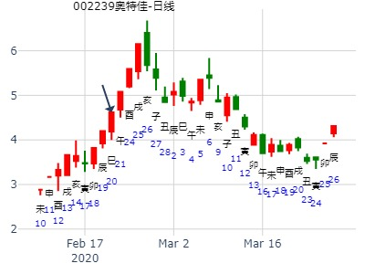
主帖标题: 占卦测下周买卖股票可否进财-----
公历时间：2011年3月13日10时0分 农历时间：辛卯年 二月初九日巳时
神 煞：驿马─巳 桃花─子 日禄─午 贵人─酉，亥
干 支：辛卯年 辛卯月 丁卯日 乙巳时 （日空：戌亥）
离宫：火风鼎
六神 伏 神 【本 卦】
青龙 ▅▅▅▅▅ 兄弟己巳火
玄武 ▅▅ ▅▅ 子孙己未土 应
白虎 ▅▅▅▅▅ 妻财己酉金
螣蛇 ▅▅▅▅▅ 妻财辛酉金
勾陈 ▅▅▅▅▅ 官鬼辛亥水 世
朱雀 父母己卯木 ▅▅ ▅▅ 子孙辛丑土
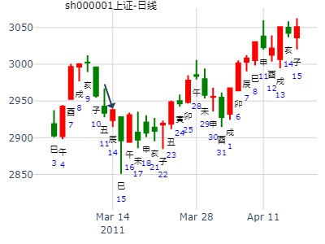
女 占事：下周的中小板走势如何
公历起卦时间：2015年3月5日10时37分 (电脑自动)
干支：乙未年 戊寅月 庚辰日 辛巳时 （日空：申酉）
离宫：火风鼎 离宫：火风鼎
六神 伏神 本 卦 变 卦
腾蛇 兄弟己巳火 ▅▅▅▅▅ 兄弟己巳火 ▅▅▅▅▅
勾陈 子孙己未土 ▅▅ ▅▅ 应 子孙己未土 ▅▅ ▅▅ 应
朱雀 妻财己酉金 ▅▅▅▅▅ 妻财己酉金 ▅▅▅▅▅
青龙 妻财辛酉金 ▅▅▅▅▅ 妻财辛酉金 ▅▅▅▅▅
玄武 官鬼辛亥水 ▅▅▅▅▅ 世 官鬼辛亥水 ▅▅▅▅▅ 世
白虎 父母己卯木 子孙辛丑土 ▅▅ ▅▅ 子孙辛丑土 ▅▅ ▅▅
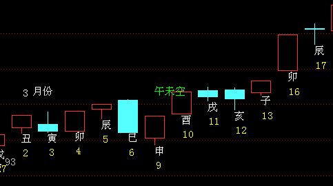
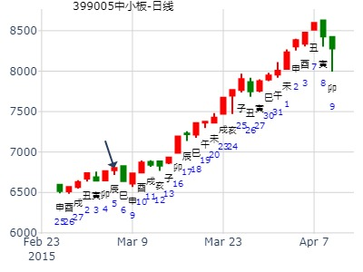
江西铜业600362半年卦。火风鼎静卦
时间: 2015-03-14 13：7
干支: 乙未年己卯月己丑日 (旬空: 午未 )
鼎静卦
勾陈 ▅▅▅▅▅ 兄弟巳火
朱雀 ▅▅ ▅▅ 子孙未土 应
青龙 ▅▅▅▅▅ 妻财酉金
玄武 ▅▅▅▅▅ 妻财酉金
白虎 ▅▅▅▅▅ 官鬼亥水 世
腾蛇 ▅▅ ▅▅ 子孙丑土


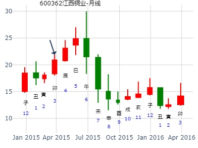
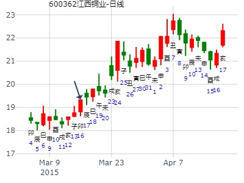
男 占事：002027七喜控股明天涨跌
公历起卦时间：2016年3月7日15时51分 (电脑自动)
干支：丙申年 辛卯月 戊子日 庚申时 （日空：午未）
离宫：火风鼎 离宫：火风鼎
六神 伏神 本 卦 变 卦
朱雀 兄弟己巳火 ▅▅▅▅▅ 兄弟己巳火 ▅▅▅▅▅
青龙 子孙己未土 ▅▅ ▅▅ 应 子孙己未土 ▅▅ ▅▅ 应
玄武 妻财己酉金 ▅▅▅▅▅ 妻财己酉金 ▅▅▅▅▅
白虎 妻财辛酉金 ▅▅▅▅▅ 妻财辛酉金 ▅▅▅▅▅
腾蛇 官鬼辛亥水 ▅▅▅▅▅ 世 官鬼辛亥水 ▅▅▅▅▅ 世
勾陈 父母己卯木 子孙辛丑土 ▅▅ ▅▅ 子孙辛丑土 ▅▅ ▅▅
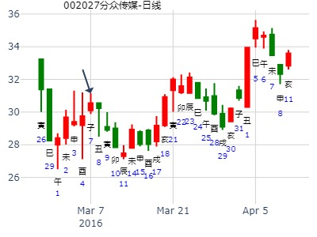
主帖标题: 600871石化油服下午涨跌
男 占事：600871石化油服明天涨跌
公历起卦时间：2016年5月11日16时51分 (电脑自动)
干支：丙申年 癸巳月 癸巳日 庚申时 （日空：午未）
离宫：火风鼎 离宫：火风鼎
六神 伏神 本 卦 变 卦
白虎 兄弟己巳火 ▅▅▅▅▅ 兄弟己巳火 ▅▅▅▅▅
腾蛇 子孙己未土 ▅▅ ▅▅ 应 子孙己未土 ▅▅ ▅▅ 应
勾陈 妻财己酉金 ▅▅▅▅▅ 妻财己酉金 ▅▅▅▅▅
朱雀 妻财辛酉金 ▅▅▅▅▅ 妻财辛酉金 ▅▅▅▅▅
青龙 官鬼辛亥水 ▅▅▅▅▅ 世 官鬼辛亥水 ▅▅▅▅▅ 世
玄武 父母己卯木 子孙辛丑土 ▅▅ ▅▅ 子孙辛丑土 ▅▅ ▅▅
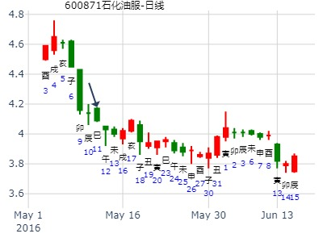
002797第一创业下周一涨跌
公历起卦时间：2016年5月20日16时50分 (电脑自动)
干支：丙申年 癸巳月 壬寅日 戊申时 （日空：辰巳）
离宫：火风鼎 离宫：火风鼎
六神 伏神 本 卦 变 卦
白虎 兄弟己巳火 ▅▅▅▅▅ 兄弟己巳火 ▅▅▅▅▅
腾蛇 子孙己未土 ▅▅ ▅▅ 应 子孙己未土 ▅▅ ▅▅ 应
勾陈 妻财己酉金 ▅▅▅▅▅ 妻财己酉金 ▅▅▅▅▅
朱雀 妻财辛酉金 ▅▅▅▅▅ 妻财辛酉金 ▅▅▅▅▅
青龙 官鬼辛亥水 ▅▅▅▅▅ 世 官鬼辛亥水 ▅▅▅▅▅ 世
玄武 父母己卯木 子孙辛丑土 ▅▅ ▅▅ 子孙辛丑土 ▅▅ ▅▅
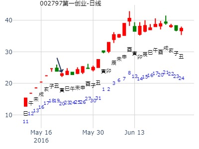
最近二周大盘涨跌？--阿飞
时间: 2019-05-27 22时32分
干支: 己亥年己巳月甲子日 (旬空: 戌亥 )
鼎静卦
玄武 ▅▅▅▅▅ 兄弟巳火
白虎 ▅▅ ▅▅ 子孙未土 应
腾蛇 ▅▅▅▅▅ 妻财酉金
勾陈 ▅▅▅▅▅ 妻财酉金
朱雀 ▅▅▅▅▅ 官鬼亥水 世
青龙 ▅▅ ▅▅ 子孙丑土
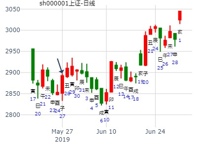
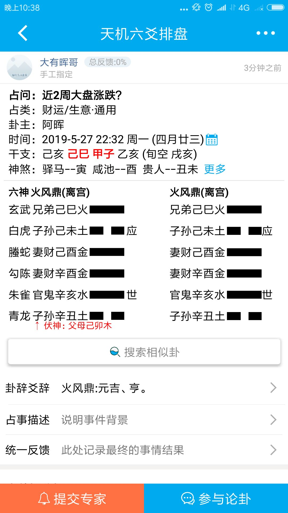
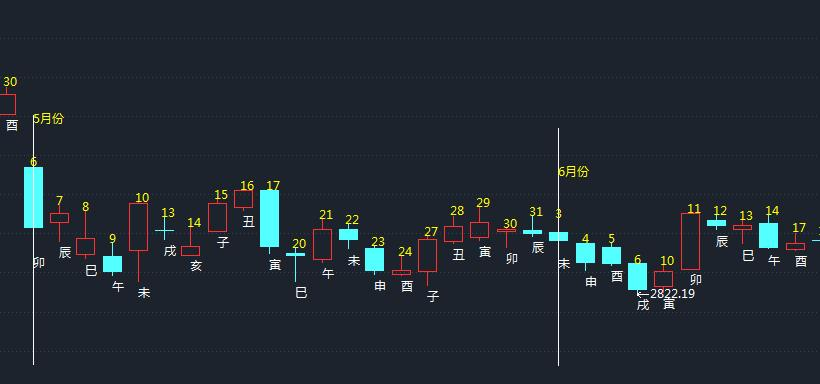
午月火风鼎静卦，上风高科近期。
时间: 2001-06-06
干支: 辛巳年甲午月庚子日 (旬空: 辰巳 )
鼎静卦
腾蛇 ▅▅▅▅▅ 兄弟巳火
勾陈 ▅▅ ▅▅ 子孙未土 应
朱雀 ▅▅▅▅▅ 妻财酉金
青龙 ▅▅▅▅▅ 妻财酉金
玄武 ▅▅▅▅▅ 官鬼亥水 世
白虎 父母卯木▅▅ ▅▅ 子孙丑土
元吉，亨。
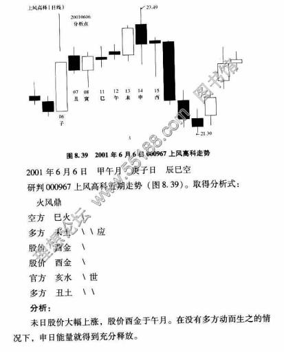
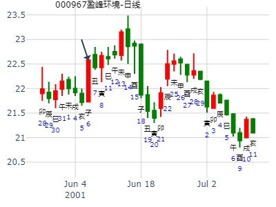
主帖标题: 603789星光农机下午跟明天涨跌
生：没填 年 性别：男 占事：603789星光农机明天涨跌
公历起卦时间：2015年6月3日15时22分 (电脑自动)
干支：乙未年 辛巳月 庚戌日 甲申时 （日空：寅卯）
离宫：火风鼎 离宫：火风鼎
六神 伏神 本 卦 变 卦
腾蛇 兄弟己巳火 ▅▅▅▅▅ 兄弟己巳火 ▅▅▅▅▅
勾陈 子孙己未土 ▅▅ ▅▅ 应 子孙己未土 ▅▅ ▅▅ 应
朱雀 妻财己酉金 ▅▅▅▅▅ 妻财己酉金 ▅▅▅▅▅
青龙 妻财辛酉金 ▅▅▅▅▅ 妻财辛酉金 ▅▅▅▅▅
玄武 官鬼辛亥水 ▅▅▅▅▅ 世 官鬼辛亥水 ▅▅▅▅▅ 世
白虎 父母己卯木 子孙辛丑土 ▅▅ ▅▅ 子孙辛丑土 ▅▅ ▅▅
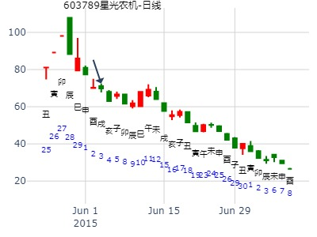
主帖标题: 6月15至6月18日大盘预测
主题：手摇上海股市在下周的行情走势如何？
辛丑 甲午 庚寅 丁亥 (午未空) 辛丑年五月初一(2021/06/11 21:57:34)
火风鼎
腾蛇 兄弟巳火 ／
勾陈 子孙未土 ∥ 应
朱雀 妻财己酉 ／
青龙 妻财酉金 ／
玄武 官鬼亥水 ／ 世
父母卯木：白虎 子孙丑土 ∥
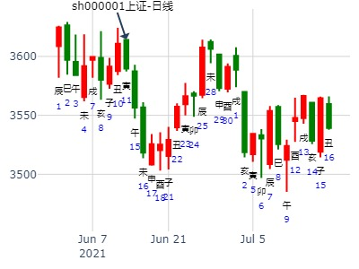
主帖标题: RQ中兵红箭6.10甲午五-6.17辛丑五共6日哪日顶？
哪日顶？jyrxus 男 占事：没填
公历起卦时间：2022年6月12日8时36分 (电脑自动)
干支：壬寅年 丙午月 丙申日 壬辰时 （日空：辰巳）
离宫：火风鼎 离宫：火风鼎
六神 伏神 本 卦 变 卦
青龙 兄弟己巳火 ▅▅▅▅▅ 兄弟己巳火 ▅▅▅▅▅
玄武 子孙己未土 ▅▅ ▅▅ 应 子孙己未土 ▅▅ ▅▅ 应
白虎 妻财己酉金 ▅▅▅▅▅ 妻财己酉金 ▅▅▅▅▅
螣蛇 妻财辛酉金 ▅▅▅▅▅ 妻财辛酉金 ▅▅▅▅▅
勾陈 官鬼辛亥水 ▅▅▅▅▅ 世 官鬼辛亥水 ▅▅▅▅▅ 世
朱雀 父母己卯木 子孙辛丑土 ▅▅ ▅▅ 子孙辛丑土 ▅▅ ▅▅
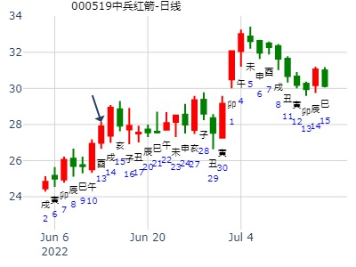
占事：上证何时见底回升，李炎
时间：2015年7月8日21点53分 星期三
干支：乙未年 癸未月 乙酉日 丁亥时 旬空：（午未）
六神 藏爻 火风鼎 离宫
玄武 ■■■■■■兄弟巳火
白虎 ■■ ■■子孙未土 应
腾蛇 ■■■■■■妻财酉金
勾陈 官鬼亥水■■■■■■妻财酉金
朱雀 子孙丑土■■■■■■官鬼亥水 世
青龙 父母卯木■■ ■■子孙丑土
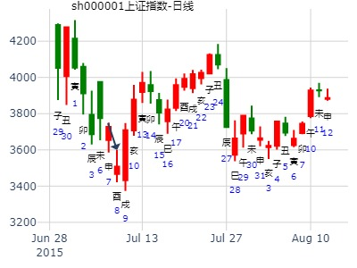
主帖标题: 7月20-24日沪市一周走势
7月24日 上证指数是涨还是跌？铜钱手摇卦 (手工指定)
干支：乙未年 癸未月 庚子日 甲申时 （日空：辰巳）
离宫：火风鼎 离宫：火风鼎
六神 伏神 本 卦 变 卦
腾蛇 兄弟己巳火 ▅▅▅▅▅ 兄弟己巳火 ▅▅▅▅▅
勾陈 子孙己未土 ▅▅ ▅▅ 应 子孙己未土 ▅▅ ▅▅ 应
朱雀 妻财己酉金 ▅▅▅▅▅ 妻财己酉金 ▅▅▅▅▅
青龙 妻财辛酉金 ▅▅▅▅▅ 妻财辛酉金 ▅▅▅▅▅
玄武 官鬼辛亥水 ▅▅▅▅▅ 世 官鬼辛亥水 ▅▅▅▅▅ 世
白虎 父母己卯木 子孙辛丑土 ▅▅ ▅▅ 子孙辛丑土 ▅▅ ▅▅
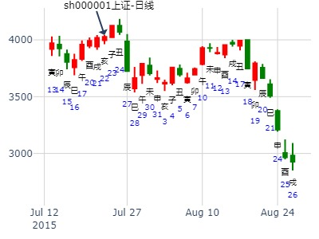
男 占事：上证7.1乙卯五-7.8壬戌五哪日顶？
排卦：中国周易研究会网六爻在线排盘系统 https://www.dawn8888.live
公历起卦时间：2022年7月2日11时1分 (电脑自动)
干支：壬寅年 丙午月 丙辰日 甲午时 （日空：子丑）
离宫：火风鼎 离宫：火风鼎
六神 伏神 本 卦 变 卦
青龙 兄弟己巳火 ▅▅▅▅▅ 兄弟己巳火 ▅▅▅▅▅
玄武 子孙己未土 ▅▅ ▅▅ 应 子孙己未土 ▅▅ ▅▅ 应
白虎 妻财己酉金 ▅▅▅▅▅ 妻财己酉金 ▅▅▅▅▅
螣蛇 妻财辛酉金 ▅▅▅▅▅ 妻财辛酉金 ▅▅▅▅▅
勾陈 官鬼辛亥水 ▅▅▅▅▅ 世 官鬼辛亥水 ▅▅▅▅▅ 世
朱雀 父母己卯木 子孙辛丑土 ▅▅ ▅▅ 子孙辛丑土 ▅▅ ▅▅
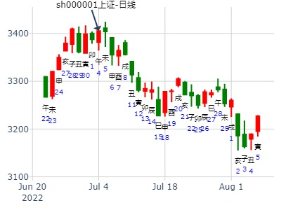
主帖标题: 7.4一上证收盘走势？
出生：2022 年 性别：男 占事：没填
排卦：元亨利贞网六爻在线排盘系统 https://www.china95.net
公历起卦时间：2022年7月2日14时42分 (电脑自动)
干支：壬寅年 丙午月 丙辰日 乙未时 （日空：子丑）
神煞：驿马－寅 桃花－酉 日禄－巳 贵人－酉，亥
离宫：火风鼎 离宫：火风鼎
六神 伏神 本 卦 变 卦
青龙 兄弟己巳火 ▅▅▅▅▅ 兄弟己巳火 ▅▅▅▅▅
玄武 子孙己未土 ▅▅ ▅▅ 应 子孙己未土 ▅▅ ▅▅ 应
白虎 妻财己酉金 ▅▅▅▅▅ 妻财己酉金 ▅▅▅▅▅
螣蛇 妻财辛酉金 ▅▅▅▅▅ 妻财辛酉金 ▅▅▅▅▅
勾陈 官鬼辛亥水 ▅▅▅▅▅ 世 官鬼辛亥水 ▅▅▅▅▅ 世
朱雀 父母己卯木 子孙辛丑土 ▅▅ ▅▅ 子孙辛丑土 ▅▅ ▅▅
2022-07-28
002240盛新锂能何时涨？ 火风鼎静卦。

财子虽然得日月助，旬空则涨不动。

时间: 2022-07-28
干支: 壬寅年丁未月壬午日 (旬空: 申酉 ) 鼎静卦
白虎 ▅▅▅▅▅ 兄弟巳火
腾蛇 ▅▅ ▅▅ 子孙未土 应
勾陈 ▅▅▅▅▅ 妻财酉金
朱雀 ▅▅▅▅▅ 妻财酉金
青龙 ▅▅▅▅▅ 官鬼亥水 世
玄武 ▅▅ ▅▅ 子孙丑土
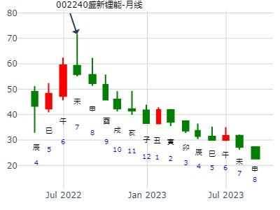
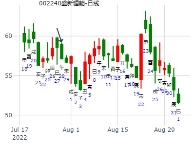
占事：000600 当天行情
起卦方式：手工指定 易经股市论坛 www.yijingstock.com 在线排盘系统
公历时间：2013年8月15日8时0分
干 支：癸巳年 庚申月 癸丑日 丙辰时
旬 空：午未 子丑 (寅卯) 子丑
离宫：火风鼎
六神 伏 神 【本 卦】
白虎 ▄▄▄▄▄ 兄弟己巳火
螣蛇 ▄▄ ▄▄ 子孙己未土 应
勾陈 ▄▄▄▄▄ 妻财己酉金
朱雀 ▄▄▄▄▄ 妻财辛酉金
青龙 ▄▄▄▄▄ 官鬼辛亥水 世
玄武 父母己卯木 ▄▄ ▄▄ 子孙辛丑土
试断：收阳。
平开横向震荡收涨0.02、0.49%的阳线。
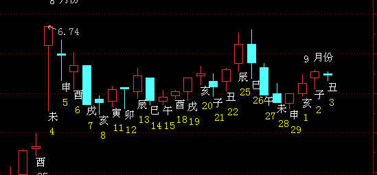
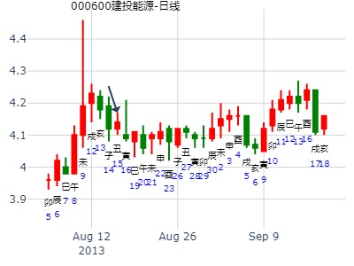
作者： 幸福的伟兄
公历起卦时间：2014年8月1日11时46分 (电脑自动)
干支：甲午年 辛未月 甲辰日 庚午时 （日空：寅卯）
离宫：火风鼎 离宫：火风鼎
六神 伏神 本 卦 变 卦
玄武 兄弟己巳火 ▅▅▅▅▅ 兄弟己巳火 ▅▅▅▅▅
白虎 子孙己未土 ▅▅ ▅▅ 应 子孙己未土 ▅▅ ▅▅ 应
腾蛇 妻财己酉金 ▅▅▅▅▅ 妻财己酉金 ▅▅▅▅▅
勾陈 妻财辛酉金 ▅▅▅▅▅ 妻财辛酉金 ▅▅▅▅▅
朱雀 官鬼辛亥水 ▅▅▅▅▅ 世 官鬼辛亥水 ▅▅▅▅▅ 世
青龙 父母己卯木 子孙辛丑土 ▅▅ ▅▅ 子孙辛丑土 ▅▅ ▅▅
用神酉金在起卦月日旺。原神子神旺于月日。
进入申酉月财爻得月助。
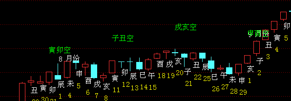

测000979中弘股份明日行情
性别：男 占事：测000979中弘股份明日行情
公历时间：2014年8月19日15时35分
干 支：甲午年 壬申月 壬戌日 戊申时
旬 空：辰巳 戌亥 (子丑) 寅卯
离宫：火风鼎
六神 伏 神 【本 卦】
白虎 ▄▄▄▄▄ 兄弟己巳火
螣蛇 ▄▄ ▄▄ 子孙己未土 应
勾陈 ▄▄▄▄▄ 妻财己酉金
朱雀 ▄▄▄▄▄ 妻财辛酉金
青龙 ▄▄▄▄▄ 官鬼辛亥水 世
玄武 父母己卯木 ▄▄ ▄▄ 子孙辛丑土 |
涨停。当中开板。
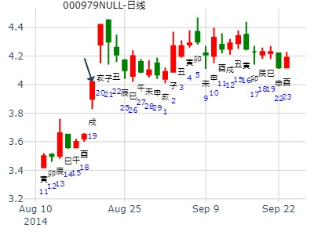
主帖标题: 六爻测股票，一天一卦，先发先看
男 占事：600696匹凸匹周四周五涨跌
公历起卦时间：2016年8月3日15时39分 (电脑自动)
干支：丙申年 乙未月 丁巳日 戊申时 （日空：子丑）
离宫：火风鼎 离宫：火风鼎
六神 伏神 本 卦 变 卦
青龙 兄弟己巳火 ▅▅▅▅▅ 兄弟己巳火 ▅▅▅▅▅
玄武 子孙己未土 ▅▅ ▅▅ 应 子孙己未土 ▅▅ ▅▅ 应
白虎 妻财己酉金 ▅▅▅▅▅ 妻财己酉金 ▅▅▅▅▅
腾蛇 妻财辛酉金 ▅▅▅▅▅ 妻财辛酉金 ▅▅▅▅▅
勾陈 官鬼辛亥水 ▅▅▅▅▅ 世 官鬼辛亥水 ▅▅▅▅▅ 世
朱雀 父母己卯木 子孙辛丑土 ▅▅ ▅▅ 子孙辛丑土 ▅▅ ▅▅
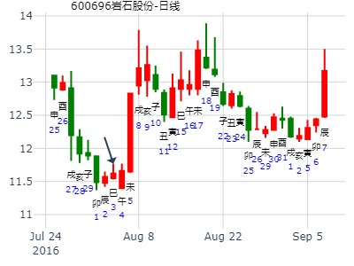
603477未来二周
时间: 2021-09-24 11时23分
干支: 辛丑年丁酉月乙亥日 (旬空: 申酉 )
鼎静卦
玄武 ▅▅▅▅▅ 兄弟巳火
白虎 ▅▅ ▅▅ 子孙未土 应
腾蛇 ▅▅▅▅▅ 妻财酉金
勾陈 ▅▅▅▅▅ 妻财酉金
朱雀 ▅▅▅▅▅ 官鬼亥水 世
青龙 父母卯木▅▅ ▅▅ 子孙丑土
卯日冲旬空酉金，只是冲实而巳，不论冲动。
注： 财爻旬空，但世爻有力。
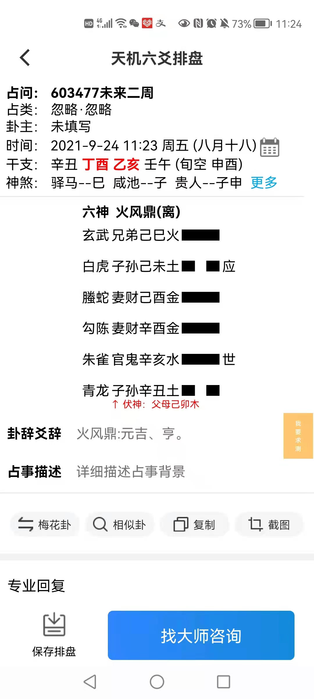
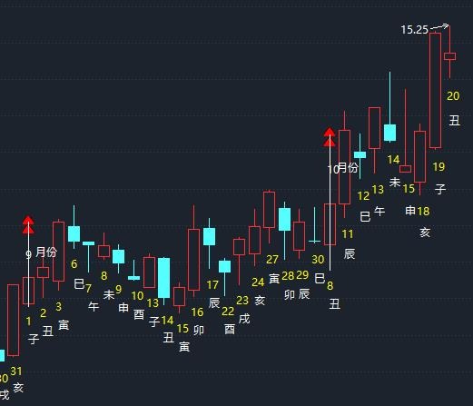
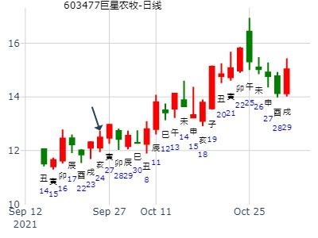
603256宏和科技2周。
时间: 2022-09-26
干支: 壬寅年己酉月壬午日 (旬空: 申酉 )
鼎静卦
白虎 ▅▅▅▅▅ 兄弟巳火
腾蛇 ▅▅ ▅▅ 子孙未土 应
勾陈 ▅▅▅▅▅ 妻财酉金
朱雀 ▅▅▅▅▅ 妻财酉金
青龙 ▅▅▅▅▅ 官鬼亥水 世
玄武 父母卯木▅▅ ▅▅ 子孙丑土
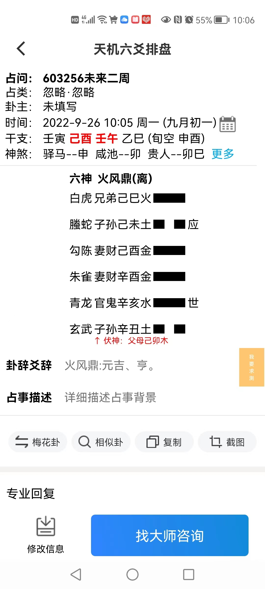
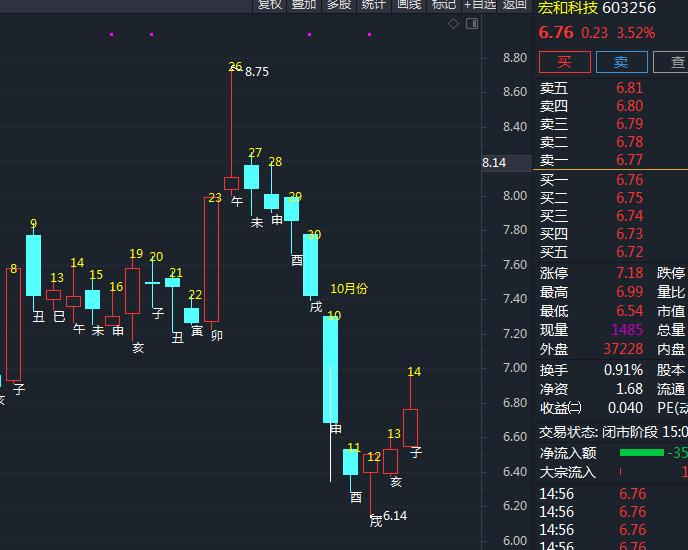
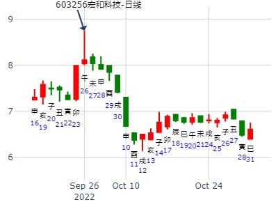
主帖标题: 2012年11月大盘涨跌卦
占事：2012年11月大盘涨跌？
排卦：元亨利贞网六爻在线排盘系统 http://www.china95.net
公历起卦时间：2012年10月31日16时20分 (手工指定)
干支：壬辰年 庚戌月 乙丑日 甲申时 （日空：戌亥）
神煞：驿马－亥 桃花－午 日禄－卯 贵人－子，申
离宫：火风鼎 离宫：火风鼎
六神 伏神 本 卦 变 卦
玄武 兄弟己巳火 ▅▅▅▅▅ 兄弟己巳火 ▅▅▅▅▅
白虎 子孙己未土 ▅▅ ▅▅ 应 子孙己未土 ▅▅ ▅▅ 应
腾蛇 妻财己酉金 ▅▅▅▅▅ 妻财己酉金 ▅▅▅▅▅
勾陈 妻财辛酉金 ▅▅▅▅▅ 妻财辛酉金 ▅▅▅▅▅
朱雀 官鬼辛亥水 ▅▅▅▅▅ 世 官鬼辛亥水 ▅▅▅▅▅ 世
青龙 父母己卯木 子孙辛丑土 ▅▅ ▅▅ 子孙辛丑土 ▅▅ ▅▅
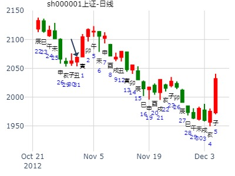
男 占事：600425青松建化周3周4涨跌
公历起卦时间：2014年10月28日18时1分 (电脑自动)
干支：甲午年 甲戌月 壬申日 己酉时 （日空：戌亥）
神煞：驿马－寅 桃花－酉 日禄－亥 贵人－卯，巳
离宫：火风鼎 离宫：火风鼎
六神 伏神 本 卦 变 卦
白虎 兄弟己巳火 ▅▅▅▅▅ 兄弟己巳火 ▅▅▅▅▅
腾蛇 子孙己未土 ▅▅ ▅▅ 应 子孙己未土 ▅▅ ▅▅ 应
勾陈 妻财己酉金 ▅▅▅▅▅ 妻财己酉金 ▅▅▅▅▅
朱雀 妻财辛酉金 ▅▅▅▅▅ 妻财辛酉金 ▅▅▅▅▅
青龙 官鬼辛亥水 ▅▅▅▅▅ 世 官鬼辛亥水 ▅▅▅▅▅ 世
玄武 父母己卯木 子孙辛丑土 ▅▅ ▅▅ 子孙辛丑土 ▅▅ ▅▅
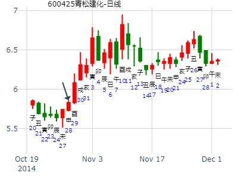
东方电气旬卦，火风鼎静卦。财爻旬空--阿飞
时间: 2021-11-22 9时28分
干支: 辛丑年己亥月甲戌日 (旬空: 申酉 )
鼎静卦
玄武 ▅▅▅▅▅ 兄弟巳火
白虎 ▅▅ ▅▅ 子孙未土 应
腾蛇 ▅▅▅▅▅ 妻财酉金
勾陈 ▅▅▅▅▅ 妻财酉金
朱雀 ▅▅▅▅▅ 官鬼亥水 世
青龙 父母卯木▅▅ ▅▅ 子孙丑土
财爻旬空，世爻旺，仍然涨。
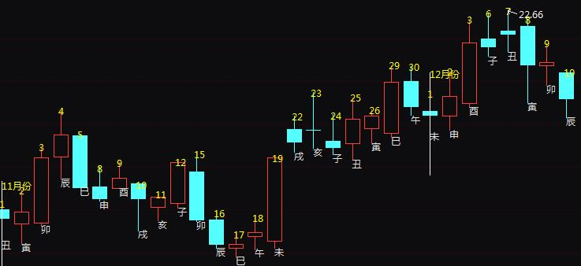
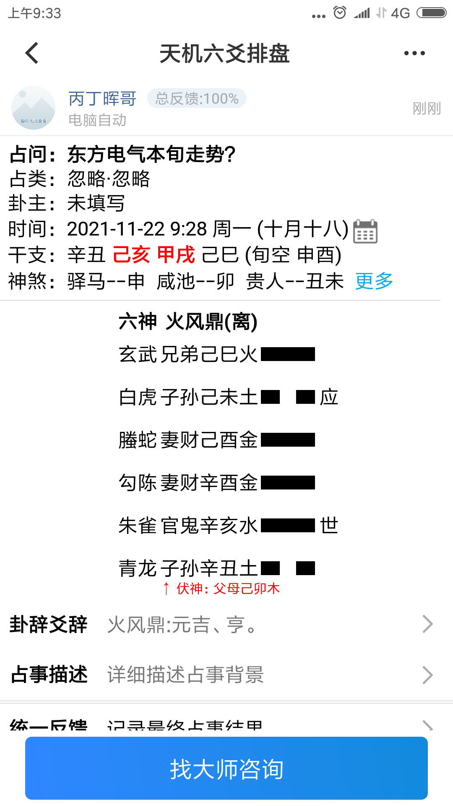
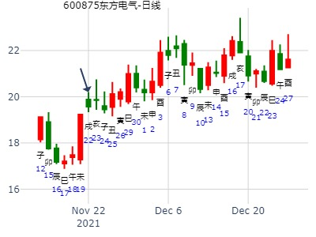
同仁堂1127二周。火风鼎静卦。旬空被冲暗动
时间: 2021-11-27 8：38
干支: 辛丑年己亥月己卯日 (旬空: 申酉 )
鼎静卦
勾陈 ▅▅▅▅▅ 兄弟巳火
朱雀 ▅▅ ▅▅ 子孙未土 应
青龙 ▅▅▅▅▅ 妻财酉金
玄武 ▅▅▅▅▅ 妻财酉金
白虎 ▅▅▅▅▅ 官鬼亥水 世
腾蛇 ▅▅ ▅▅ 子孙丑土
12月9日考察是原旬空，还是动态旬空，卯酉冲？
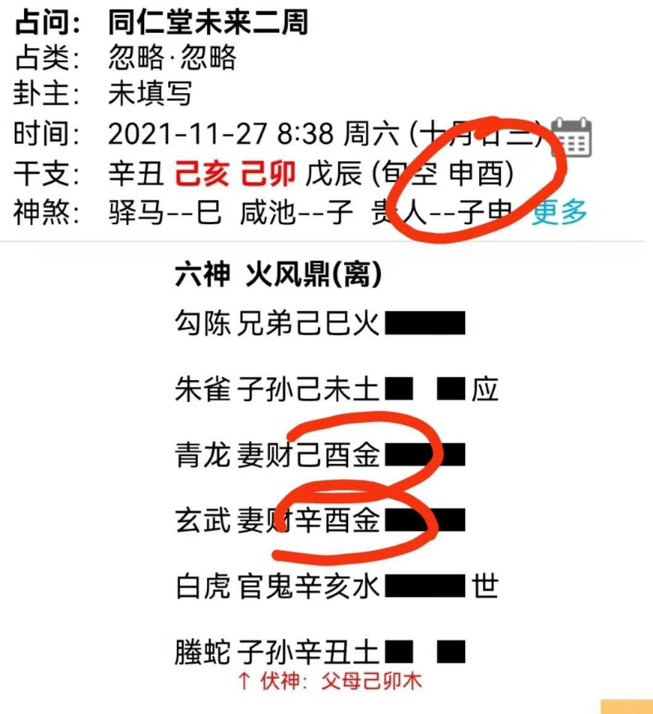
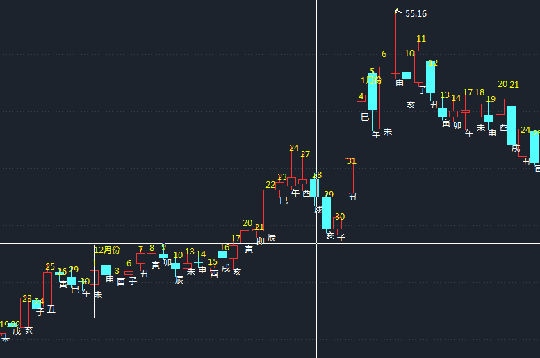
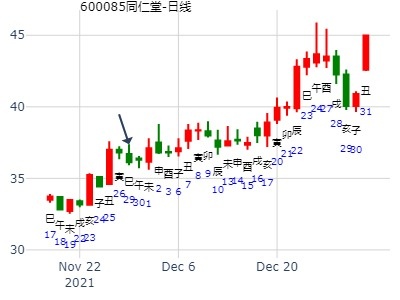
特变电工亥子月整体涨跌横？ 鼎静卦。
公历起卦时间：2022年11月23日14时27分 (在线摇卦)
干支：壬寅年 辛亥月 庚辰日 癸未时 （日空：申酉）
神煞：驿马－寅 桃花－酉 日禄－申 贵人－丑，未
离宫：火风鼎 离宫：火风鼎
六神 伏神 本 卦 变 卦
螣蛇 兄弟己巳火 ▅▅▅▅▅ 兄弟己巳火 ▅▅▅▅▅
勾陈 子孙己未土 ▅▅ ▅▅ 应 子孙己未土 ▅▅ ▅▅ 应
朱雀 妻财己酉金 ▅▅▅▅▅ 妻财己酉金 ▅▅▅▅▅
青龙 妻财辛酉金 ▅▅▅▅▅ 妻财辛酉金 ▅▅▅▅▅
玄武 官鬼辛亥水 ▅▅▅▅▅ 世 官鬼辛亥水 ▅▅▅▅▅ 世
白虎 父母己卯木 子孙辛丑土 ▅▅ ▅▅ 子孙辛丑土 ▅▅ ▅▅
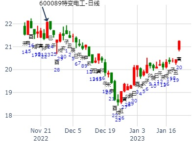
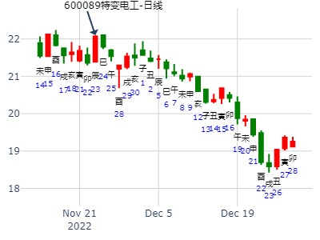
2010.12.22－2011.1.6，300024机器人走势。暴涨。（ferrari铜钱）
公历起卦时间：2010年12月21日15时3分
干支：庚寅年 戊子月 乙巳日 甲申时 （日空：寅卯）
鼎静卦
玄武 ▅▅▅▅▅ 兄弟巳火
白虎 ▅▅ ▅▅ 子孙未土 应
腾蛇 ▅▅▅▅▅ 妻财酉金
勾陈 ▅▅▅▅▅ 妻财酉金
朱雀 ▅▅▅▅▅ 官鬼亥水 世
青龙 父母卯木▅▅ ▅▅ 子孙丑土
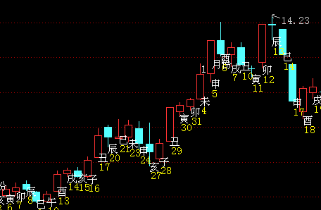
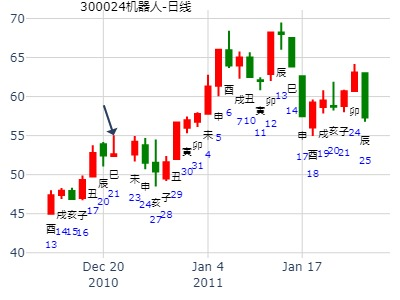
主帖标题: T-Z上证指数擂台赛第二场第4局（2019年12月19日）应战方
Z 应战方
占问事宜：要问的事情
公历：2019年12月19日9时20分，星期四。
干支：己亥年 丙子月 庚寅日 辛巳时 (卦身：未)
主变卦 火风鼎(离宫) [空亡:午、未]
螣蛇 ▅▅▅▅▅ 兄弟己巳火
勾陈 ▅▅ ▅▅ 子孙己未土 应
朱雀 ▅▅▅▅▅ 妻财己酉金
青龙 ▅▅▅▅▅ 妻财辛酉金
玄武 ▅▅▅▅▅ 官鬼辛亥水 世
白虎 父母己卯木 ▅▅ ▅▅ 子孙辛丑土
判断在二楼
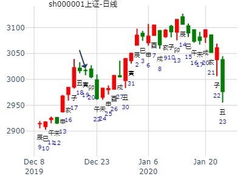